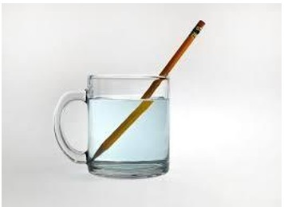
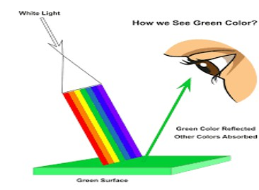
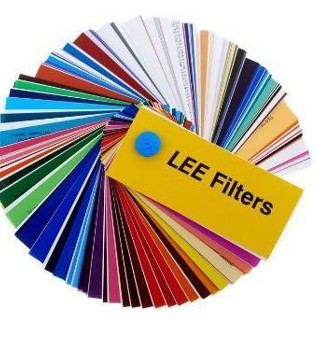
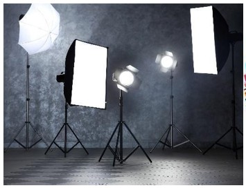

🎯 חשיבות הנושא
לאיכות האור יש השפעה על האופן שבו מופיע המצולם. באמצעות תכונה זו ניתן להדגיש פרטים מסוימים באובייקט המצולם או להעלימם, להחמיא לו או ליצור מראה שונה. בפרק זה נלמד מהו אופי האור ומהי תגובת האור כתוצאה ממפגש עם חומרים שונים. ראו גם את הפרק "אור וצבע".
📚 מטרות ומושגים מרכזיים
מטרות אופרטיביות:
- התלמיד יבין את ההבדל בין אור קשה לאור רך.
- התלמיד יבין את תגובת החומר לאור.
- התלמיד יבין את התהליך שעובר האור במגע עם חומרים בעלי תכונות שונות.
מושגי יסוד:
ב.1 אור קשה ואור רך
במרבית המקרים חשיבות התאורה היא במשחקים של אור וצל לצורך הדגשת הנושא המצולם. כשבאים לבחון את אופי האור או את איכות האור נהוג לחלק זאת לשני סוגים עיקריים:
אור קשה (Hard Light)
אור שמגיע ישירות ממקור אור קטן יחסית (נקודתי). קרני אור מקבילות שיוצאות ממקור האור יוצרות צללים בעלי קווי גבול חדים. האור הקשה מבליט את קווי המתאר והמרקם של המצולם, ומוסיף מימד, עומק ומורכבות למצולם. הקונטרסט הגבוה של האור הקשה יוצר אווירה דרמטית חזקה.
דמויות שמצולמות באור זה מופיעות כחזקות ורציניות. האור הקשה משמש בז'אנרים: פילם נואר, דרמה וסרטי אקשן.
אור רך (Soft Light)
אור שחוזר ממשטח ומתפזר, או אור שעובר דרך חומר שאינו שקוף (כמו נייר אפייה, בד משי, ג׳לטין לבן וכדומה), ויוצר צללים רכים ולא ברורים. קשה לשלוט באור רך, בעיקר במקרים שבהם רוצים לחסום אותו.
האור הרך מחמיא לאובייקט המצולם ומעניק לו מראה טבעי יותר. המצולם נראה ידידותי, חם ומסביר פנים. האור הרך "מחליק פנים" ומשמש בעיקר בצילומי דיוקן, אופנה ומזון.
ב.2 תגובות החומר לאור
חומרים שונים מגיבים במגע עם האור בצורה שונה. להלן חמש הצורות העיקריות:
-
שבירה (Refraction): השבירה גורמת לאור לסטות מכיוונו המקורי. מידת הסטייה תלויה בתכונות החומר ובאורך גל האור (לדוגמה: מנסרה ששוברת אור לבן לצבעי הקשת).
שבירה
-
החזרה (Reflection): אור שחוזר מחומר מבריק או פני שטח חלקים. החזרה היא בזווית ששווה לזווית הפגיעה. עוצמת האור אינה משתנה (לדוגמה: מראה, רפלקטור כסוף).
החזרה
-
העברה (Transmission): חומר שמעביר אור נראה שקוף. הוא יכול להיות שקוף לאורכי גל מסוימים. למשל, מסנני צבע.
העברה
- ספיגה (Absorption): אור שפוגע בחומר נספג באופן חלקי או מלא. חומר שסופג אור נראה אטום. אור שמוחזר מחומרים אטומים מאפשר לנו לראות אותם.
-
פיזור (Scattering): אור שפוגע בחומר מחוספס מחזיר אור מפוזר מפני שהחומר עשוי ממישורים זעירים המופנים לכיוונים מעט שונים זה מזה (נייר, קלקר).
פיזור
🛠️ תרגול מעשי

- התלמידים יתרגלו מעבר אור דרך מסננים צבעוניים (ג'לטין) על פנס תאורה.
- התלמידים יתרגלו החזרה ופיזור של האור באמצעות פנס תאורה ואביזרים המחזירים ומפזרים אור.
- התלמידים יצלמו דוגמאות למעבר אור בחומר ויעלו למצגת כיתתית את התצלומים.
📚 מקורות וחומרי עזר

- רוני פרידמן, עיצוב האור והצל: המדריך השלם לתאורת וידיאו. הוצאת שני, 2004.
- Motion Picture and Video Lighting, Blain Brown.
- Millerson, G. (2009). Lighting for Television and Film, Focal Press.
- How to Achieve Soft Light for Portraits (B&H)